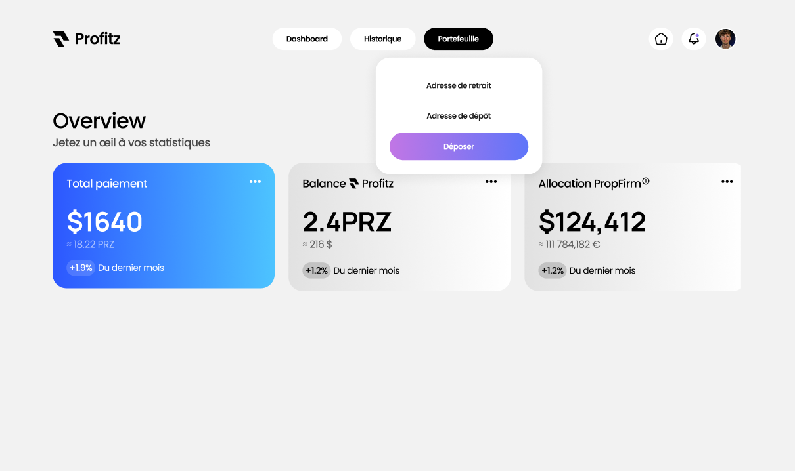

$ whoami Je m'appelle Aleksandre Herent, j'ai 20 ans et je suis étudiant en
developpement et cybersécurité à Lille. Je suis actuellement en 3ème année de Bachelor
à Ynov Lille en spécialité Cybersécurité.
$ cat /etc/hobbies En dehors de mes études, je suis passionné par le sport et les
jeux vidéos. J'aime également l'univers de la crypto-monnaie et tout ce qui touche en
général à la finance.
$ history | grep 'career' Pour ce qui est du travail, je n'hésite pas à m'investir dans
mes projets hors cours. De plus j'essaie d'appronfondir et de concrétiser mes compétences sur
des travaux professionnels auprès d'entreprises ou associations. J'ai réalisé un stage de 6
semaines dans un service de génétique dans un CHU, où j'ai pu mettre à l'épreuve mes
capacités
d'assimilation et mes connaissances. J'ai développé des pipelines répondant à
des exigences
techniques très pointues, en m'appuyant sur des cahiers des charges rédigés par les médecins,
les
techniciens et moi-même.
$ ps -aux J'ai créé mon auto-entreprise pour réaliser des missions en lien avec
mes passions, que ce soit pour des particuliers, des professionnels ou des associations. Je
développe des sites web, des outils numériques et j'automatise des processus,
offrant des solutions sur mesure à mes clients.
Parallèlement, je travaille sur des projets SaaS (Software as a Service) personnels, avec
l'objectif de les rendre accessibles au public dans les années à venir. Mon ambition est de proposer
des services innovants et en phase avec les dernières technologies.
07/2024 — PRESENT
Fullstack, Linux, BioInformatique · CHU Amiens
Développement d'un site permettant d'éxécuter des pipelines sur un automate de séquençage d'ADN (Nanopore) permettant différentes analyses de résultats. Création de pipelines maison pour des demandes spécifiques des techniciens et médecins
02/2024 — 06/2024
Fullstack, DevOps · Entreprive privée
Développement d’un site pour une entité privée qui se définit comme un club, proposant divers variétés de services et d'offres autour de la finance pour ces membres. L'application WEB permet aux membres de discuter, de suivre des cours PDF et vidéos, de suivre l'état de leur E-Wallet propfirm, de prendre des rendez-vous avec des experts, de voter pour quelles analyses seront effectuées par les experts...
11/2023 — 05/2024 (en pause)
Fullstack, DevOps, Blockchain · Projet personnel
Le projet consiste à informer les utilisateurs sur les variations du marché crypto leur permettant si il y a un moment propice d'investir ou de vendre sans même regarder le marché en permanence. Ils peuvent également se servir de ce site pour juste profiter des informations globales des cryptomonnaies comme leur prix, leur capitalisation, leur volume d'échange, etc... Les utilisateurs peuvent s'inscrire et se connecter pour pouvoir créer des alertes sur les cryptomonnaies qu'ils souhaitent. Il y a également un chat pour chaque crypto permettant aux utilisateurs de discuter entre eux. Une autre partie s'ajoute au site pour pouvoir découvrir de nouveaux actifs numériques par le biais d'un jeu de découverte. Pour donner un côté challengeant, il y a un leaderboard et un classement en temps réel
11/2023 — 01/2024
Fullstack, DevOps, Minecraft · Association
Le client est un serveur Minecraft et la demande est un site qui est connecté au serveur pour que les deux puissent communiquer pour s'échanger des informations en temps réel. Le site permet aux joueurs de voir les informations du serveur, de voir les joueurs connectés, de voir les règles du serveur, de voir les différentes commandes, de voir les différents grades, de voir les différents métiers. Il y a également une partie vote pour voir le nombre de vote de chaque joueur et voir le classement. Il y a aussi une mise en place d'un système d'alerte sur cette partie pour que les joueurs puissent être alerté si ils le souhaitent au moment de revoter pour le serveur. Une autre partie est la page des STAFF qui permet de voir les différents membres du staff en temps réel et voir si les recrutements sont ouverts.

Application Web de finance →
Permet de suivre son portefeuille d'investissement au sein de propfirm
Application Web d'alertes sur la crypto →
Alerter les utilisateurs par mail sur les indicateurs qu'ils personnalisent